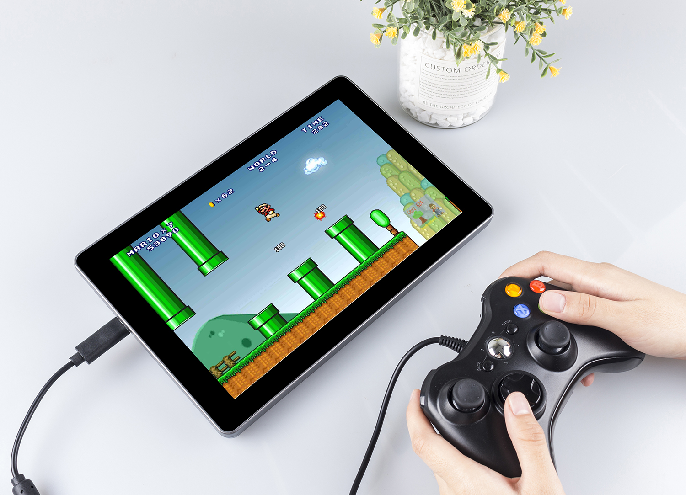
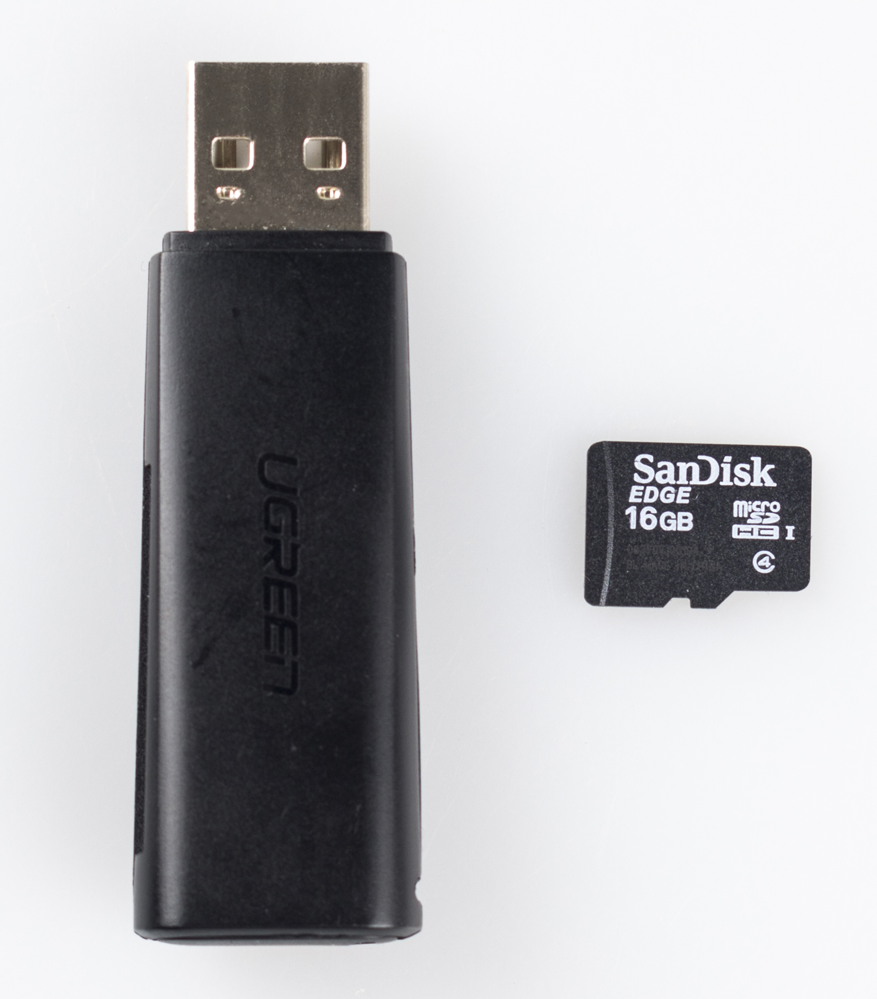
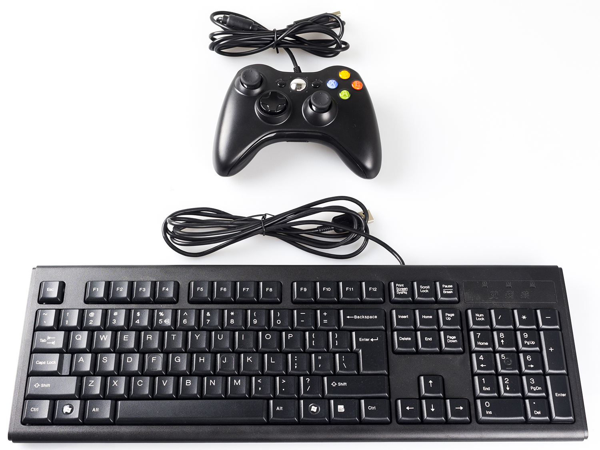
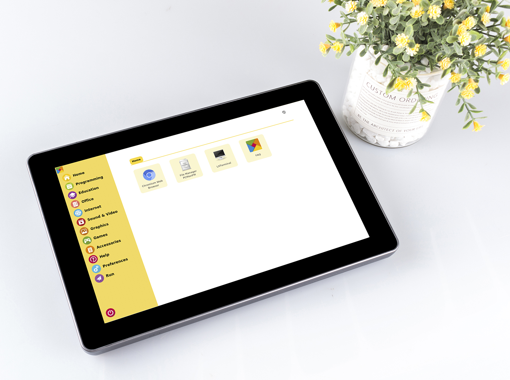
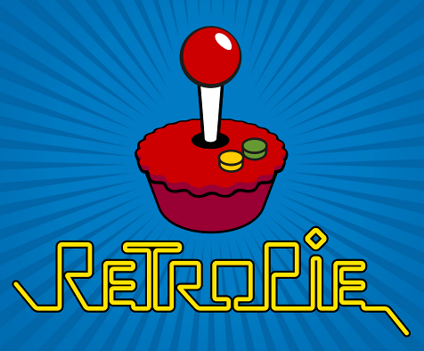
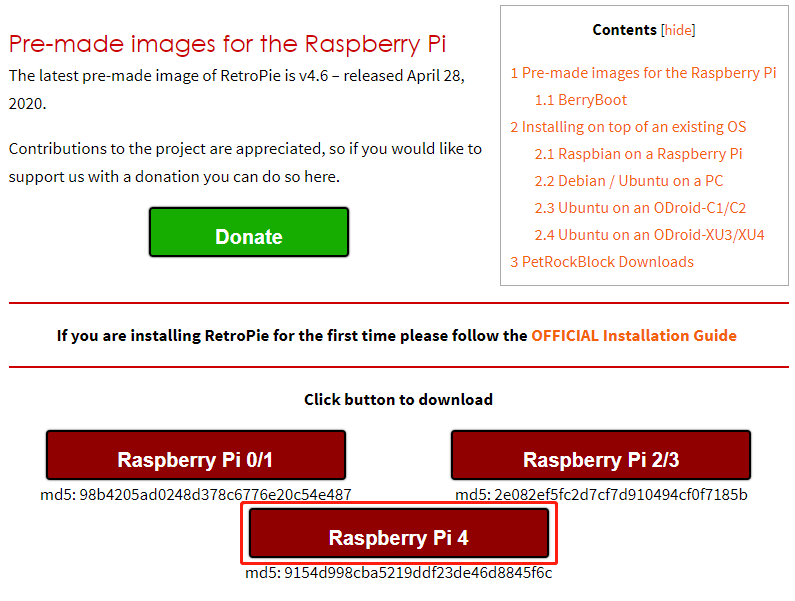
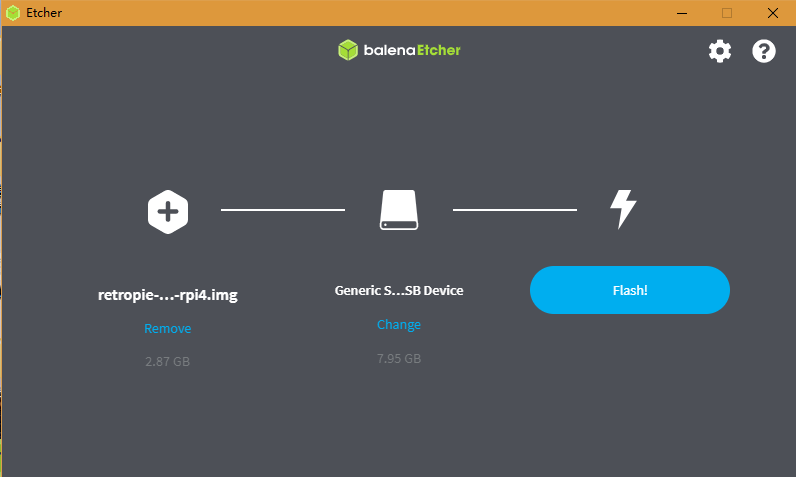
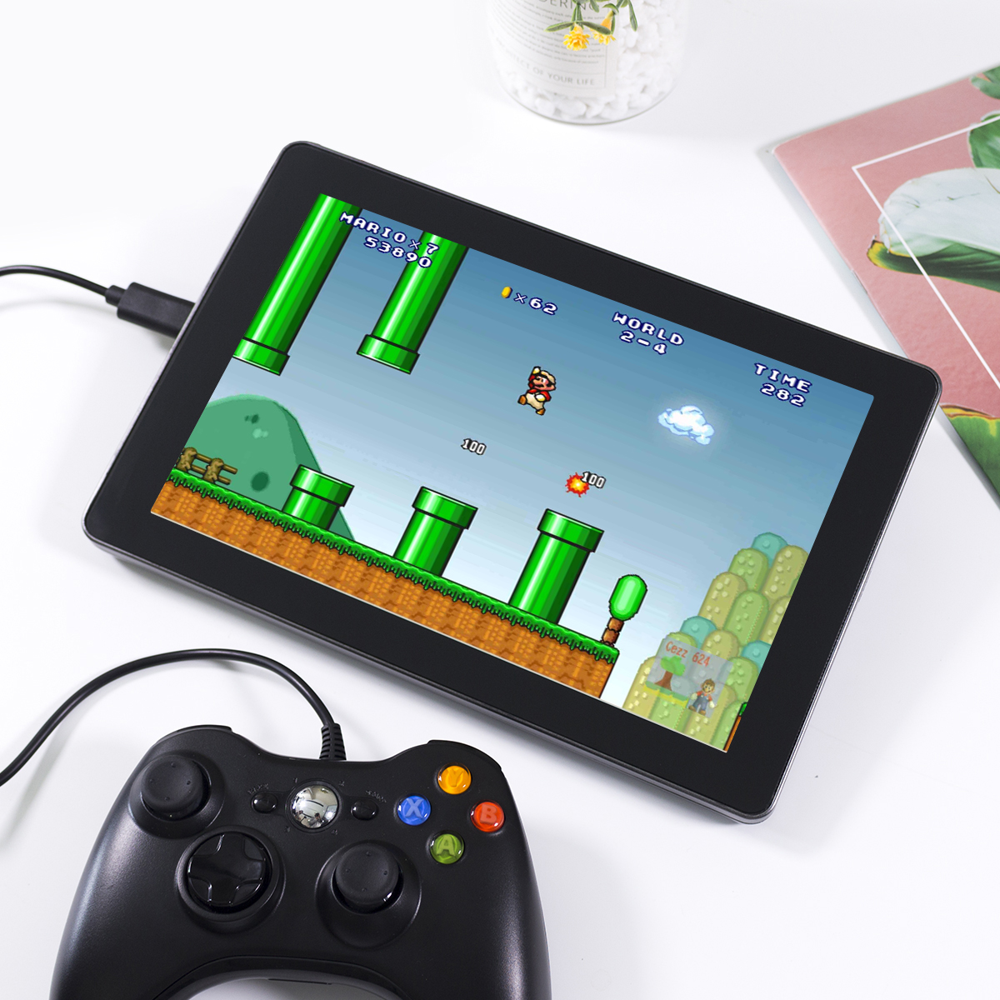

Note
Hello, welcome to the SunFounder Raspberry Pi & Arduino & ESP32 Enthusiasts Community on Facebook! Dive deeper into Raspberry Pi, Arduino, and ESP32 with fellow enthusiasts.
Why Join?
Expert Support: Solve post-sale issues and technical challenges with help from our community and team.
Learn & Share: Exchange tips and tutorials to enhance your skills.
Exclusive Previews: Get early access to new product announcements and sneak peeks.
Special Discounts: Enjoy exclusive discounts on our newest products.
Festive Promotions and Giveaways: Take part in giveaways and holiday promotions.
👉 Ready to explore and create with us? Click [here] and join today!
Retro Games Console
Description
You can turn this screen Raspberry Pi into a retro games console playing with your friends, let’s see how we can do it!
{kind=link}

Required Components
A Screen
8G+ MicroSD Card
Micro-SD Card Reader
Keyboard
Gamepad
It is recommended to use a Raspberry Pi 4 as the main control board, with Retro Pie as the Operating System.
That Raspberry Pi uploads or downloads the game system and game ROM needs taking up a large memory, so it is recommended to use a large-capacity SD card to avoid configuration failures.
{kind=link}

When playing games, a gamepad and a keyboard are needed.
{kind=link}

This screen is a 1280x800 LCD touch screen, allowing for high resolution and sound quality to provide an excellent gaming experience.
{kind=link}

Game System Installation
RetroPie allows you to turn your Raspberry Pi, ODroid C1/C2, or PC into a retro-gaming machine. It builds upon Raspbian OS, Emulation Station, RetroArch and many other projects to enable you to play your favorite Arcade, home-console, and classic PC games with the minimum set-up.
{kind=link}

Installing RetroPie:
Step 1: Download the SD image compatible with the Raspberry Pi 4 on the RetroPie official website.
{kind=link}

Step 2: After the download is complete, unzip the downloaded package containing the image file.
Step 3: Then flash the RetroPie image into the micro-SD card.
For Windows, use: Raspberry Pi Imager, Etcher, or Win32DiskImager.
Note
Win32DiskImager requires an .img file extracted from the .img.gz image downloaded in step 2. You can use a program like 7zip to do this.
For macOS, use: Raspberry Pi Imager, Etcher, Apple Pi Baker, or the dd command.
For Linux, use: Raspberry Pi Imager, Etcher, or the dd command
Note
MacOS/Linux users can optionally extract the .img image from the downloaded .img.gz by using gunzip (macOS users can also simply double-click it).
{kind=link}

Step 4: Insert the micro-SD card into the Raspberry Pi, and press the power button to boot up the system.
RetroPie Configuration
After the Raspberry Pi boots up, the Controller and WiFi settings should be configured, as well as transferring game ROMs. A keyboard and a gamepad are needed when doing these steps.
The detailed steps are shown in the video:
Note
The display for the video is not a 10.1 Touch Screen, it’s another one of our products, but the configuration method is the same on the RetroPie.
Note
You can also go to RetroPie official website to detailed tutorial: RetroPie Docs.
RetroPie allows you to turn your Raspberry Pi or PC into a retro-gaming machine. But because of the nature/complexity of copyright/intellectual property law (country-specific), RetroPie doesn’t provide ROMs for games. If you want to get them, you can download from the forum or Google to find the sources, then place one ROM under the directory of
RetroPie emluator.
Below is an example using the ROM of Super Mario 3.
{kind=link}
